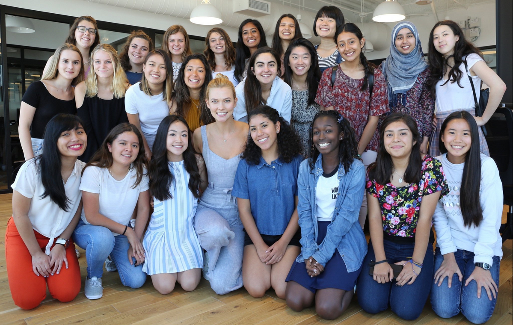

Symphony Orchestra
I have been playing violin and viola for 7 years.
Being part of several orchestras has allowed me to perform in numerous concert halls in the United States and Europe, including Carnegie Hall and Segerstrom Concert Hall.
I have taken on many different endeavors that have allowed me to explore my interests.
I have been playing violin and viola for 7 years.
Being part of several orchestras has allowed me to perform in numerous concert halls in the United States and Europe, including Carnegie Hall and Segerstrom Concert Hall.

After being an ambassador at the 2016 HOBY Southern California Leadership Seminar, I was encouraged to go out into the community and volunteer through multiple service organizations, including Kiwanis International and Math for Service.

In 2016, I was given a scholarship to learn Ruby and HTML/CSS with 22 other girls at the two-week camp founded by Karlie Kloss.
In 2017, I returned as a Level 1 teacher's assistant and Level 2 scholar.
Check out what I've been up to.